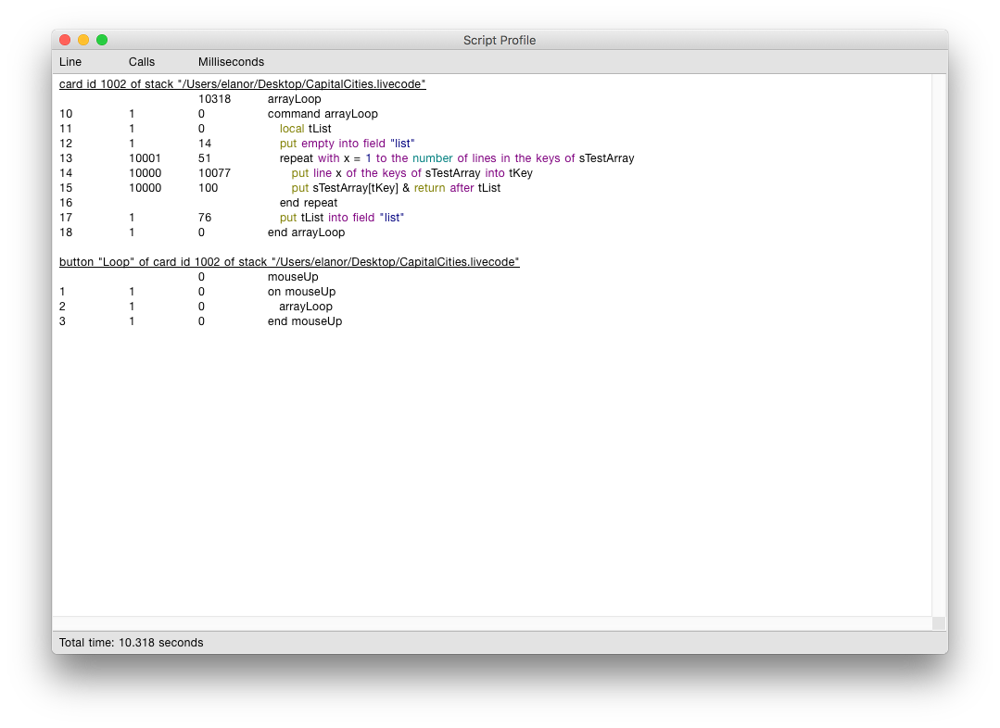
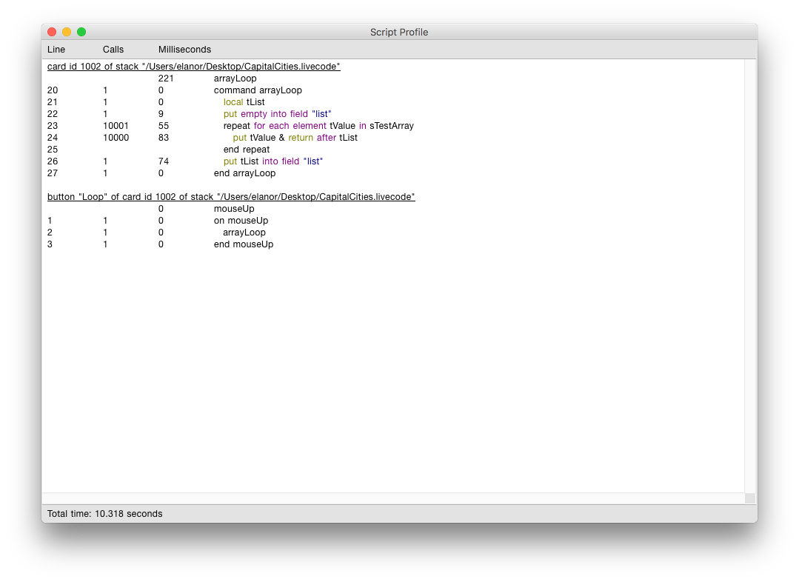

The script profiler can help you identify the most costly lines of code in a stack. This can help you optimise your code by identifying inefficiencies.
To use the script profiler, first open a stack and choose
Start Profiling Script from the Development menu to profile the
topStack. When each line of a script in the stack is executed the
execution time will be recorded. Choose Stop Profiling Script... from
the Development menu to stop profiling and present a report.
You can also start and stop the script profiler using the stack context menu, opened by ctrl-clicking or right clicking on the stack, or via the stack context menu in the Project Browser.
In this example we will look at an area that can often benefit from some optimisation, looping over an array. This example just uses a simple array with 10000 values in it. The code loops across the array and prints out all the values stored in the array.
The initial looping code is
command arrayLoop
local tList
put empty into field "list"
repeat with x = 1 to the number of lines in the keys of sTestArray
put line x of the keys of sTestArray into tKey
put sTestArray[tKey] & return after tList
end repeat
put tList into field "list"
end arrayLoop
When the script profiler is stopped a report is shown.

The report shows, for each line of script that was executed, * the line number * the number of times the line was called * the time to execute the line
The total time in seconds is displayed at the bottom of the report.
Double clicking a line in the report will open the line of script in the Script Editor.
Now we can see where all the time is going we know where we want to optimise our code.
In this example the vast majority of the time is spent on the line
put line x of the keys of sTestArray into tKey
With a little thought we can see that we can change the form of the repeat loop we are using to something more efficient. We are only really interested in the values stored in the array, not the keys, so we can change the code to loop across the elements of the array.
command arrayLoop
local tList
put empty into field "list"
repeat for each element tValue in sTestArray
put tValue & return after tList
end repeat
put tList into field "list"
end arrayLoop
Now run the script profiler again and see how much faster the code is: 0.221 seconds rather than 10.318 seconds.
